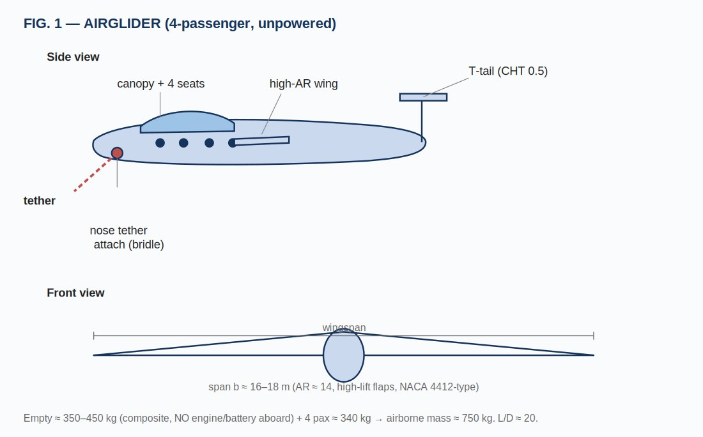

Portfolio Projects

Stiffened Wing Box Analysis & Optimization
Structural Analysis | Design Optimization
Developed and optimized a stiffened aluminum wing box structure under combined bending, shear, and torsion loads. Fixed critical buckling failure through stiffener placement optimization while maintaining mass efficiency.
Key Achievement: Resolved buckling margin of safety from -0.96 to +0.25 through design iteration
View Case Study →
CFD Analysis of NACA 0015 Airfoil
Computational Fluid Dynamics | Mesh Independence
Complete CFD analysis of symmetric NACA 0015 airfoil using ANSYS Fluent. Includes 9-level mesh independence study, k-ω turbulence modeling, and validation against NACA 0012 reference data. Demonstrates convergence methodology and aerodynamic characterization.
Key Achievement: Convergent solution with mesh independence verified; mass conservation < 0.1%
View Case Study →
Compressible Flow in Converging Nozzle (ARN2)
Subsonic Jet | CFD Validation | NASA Benchmark
NASA-validated CFD analysis of compressible subsonic jet from ARN2 convergent nozzle. Includes density-based solver, SST k-ω turbulence modeling, grid convergence study, and direct comparison with NASA experimental PIV data and reference CFD results.
Key Achievement: Excellent agreement with NASA CFD; grid independence confirmed
View Case Study →
Structural Design for Steel Shed
Steel Structure | Eurocode 3 | Industrial Design
Professional structural design of industrial automotive workshop shed using Eurocode 3 (EN 1993). Complete workflow from load calculation through member selection, verification checks (bending, shear, deflection, buckling), connection design, and SolidWorks CAD fabrication drawings.
Key Achievement: Standards-based design from load calculation to fabrication drawings
View Case Study →
BMX Crank Arm — Design, FEA & Optimisation
Archer's Design Methodology | Static & Fatigue FEA | Al 7075
Full design–analyse–optimise cycle for a BMX crank arm against a written client specification. Baseline modelled in Creo, static and fatigue FEA in ANSYS Workbench, mass reduced from 727 g to 297 g (−59 %) while keeping static SF above 10 and passing an infinite-life fatigue check. Delivered as a BS8888 engineering drawing.
Key Achievement: 59 % mass reduction; static SF 10.4, fatigue SF 3.99 — all client specs met with margin
View Case Study →
Alpha Jet Composite Radome — PFE at Airbus
DMAIC | CATIA · ANSYS ACP · Fluent · Modal · Autodyn | E-glass/Epoxy
Final-year engineering project (PFE) at Airbus Atlantic Maroc Composites, Casablanca, under Morocco's Al-Ghaith cloud-seeding programme. End-to-end DMAIC design of a bespoke E-glass/epoxy radome for the Alpha Jet nose: CATIA geometry from in-situ measurements, four independent FEA disciplines (composite structural, Fluent CFD, modal, Autodyn bird strike), and a full manufacturing plan (mould, hand lay-up, route sheet, cost model).
Key Achievement: Complete industrial design package — 20-ply laminate validated across static, aero, modal and bird-strike criteria
View Case Study →
CFD Analysis of 1045 Propeller Blade
Rotating CFD | Transient | UAV Propulsion
Transient CFD of a 10″ × 4.5″ two-blade UAV propeller at 1100 RPM in ANSYS Fluent, using a nested rotating / static dual-domain setup with a sliding mesh interface and k–ω turbulence. Covers geometry, meshing, time-step derivation from the blade-passage period, and post-processing of velocity, pressure, streamlines, tip vortices and separation regions.
Key Achievement: Full rotating-domain workflow with Δt = 1.36 ms (20 sub-steps per blade passage); coherent tip-vortex capture
View Case Study →
Automated FEA of a Cantilever Beam
ANSYS Mechanical Scripting | Static Structural | Beam-Theory Validated
Fully scripted static-structural workflow in ANSYS Mechanical 2025 — SpaceClaim Python creates the geometry, a Mechanical ACT macro handles material, mesh, boundary conditions, solve, image export and results write-out with no manual interaction. Validated on a cantilever beam against Euler–Bernoulli theory.
Key Achievement: 0.72 % deflection error vs analytical beam theory; end-to-end run in one macro
View Case Study →
Transonic CFD of the ONERA M6 Wing
3D RANS | Spalart–Allmaras | Shock Capture | Spanwise Cp
Full 3D transonic simulation of the canonical ONERA M6 wing benchmark in ANSYS Fluent at M = 0.84, Re = 11.7 × 10⁶ and α = 3.06°. Bullet-shaped far-field domain with body-of-influence mesh refinement, Spalart–Allmaras closure, ideal-gas compressibility. Captures the swept shock and matches the published wind-tunnel Cp pattern at four spanwise stations.
Key Achievement: Clean shock capture on canonical benchmark; Cp at 4 stations matches ONERA experimental data
View Case Study →
Powered Glider UAV — Design, Build & Flight Test
Team Capstone | RC Powered Glider | Raymer · CATIA · Fabricated · Flown
Team capstone at UIR: complete design-build-test cycle for an RC powered glider. Reverse-engineered target specs (FAR Part 23 Level 1), Raymer weight buildup, four-way airfoil comparison (NACA 4412 selected), full component sizing, CATIA V5 assembly, drag/thrust/power envelope. Fabricated in foam + wood ribs, CG rebalanced mid-build with twin wing motors, flight tested successfully on the UIR campus.
Key Achievement: Real airframe designed, built and flown; solved CG problem mid-build via fuselage re-length + twin wing motors
View Case Study →
Rangola — Feasibility Study of a Towed Passenger Airglider
First-Order Physics | Multi-Modal Trade Study | Concept Selection
A physics-based feasibility study of Rangola — a 4-passenger unpowered airglider towed just above the sea by an electric ocean glider. Benchmarked energy, comfort, crewing and economics against helicopter, speedboat, hydrofoil and WIG seaglider on one consistent basis; found the tow vehicle (≈80% of drag is hydrodynamic) to be the design driver and selected an electric wave-piercing catamaran (≈87 kWh/100 km). Verdict: conditionally promising.
Key Achievement: Identified the tow vehicle as the dominant design driver and defined a $12k–$25k tethered demonstrator to retire the biggest risk before any full-scale spend
View Case Study →
6U CubeSat Solar Array — Deployment Mechanism Design
Worm-Gear Hinge | Two-Stage Deployment | CATIA V5 Kinematics
Design of the hinge and deployment mechanism for a 6U CubeSat solar array: a self-locking worm-gear root hinge (40:1) plus spring-loaded knuckle hinges that open the panels in two stages — from a ≈12 mm folded stack to a flat 180° wing. The worm-and-wheel was modelled parametrically in CATIA V5 and the full deployment was motion-validated in DMU Kinematics.
Key Achievement: Built a self-locking worm-gear root hinge and validated the full two-stage deployment in DMU Kinematics, balancing the degrees of freedom down to a single driving command
View Case Study →About This Portfolio
This portfolio showcases projects spanning structural analysis, CFD simulation, composite manufacturing, aircraft design, and optimization. Each project demonstrates hands-on technical expertise combined with rigorous engineering analysis.
Projects range from industrial experience at Airbus Atlantic Maroc (composite radome design and validation) to academic research (stiffened structure optimization, CFD validation) and freelance engineering services (parametric FEA optimization).
Key Skills: ANSYS Fluent/Mechanical · CATIA V5 · Creo Parametric · SolidWorks · FEA/CFD Analysis · Structural Optimization · Python Automation · MATLAB · Composite Structures · Aircraft Design · Flight Testing